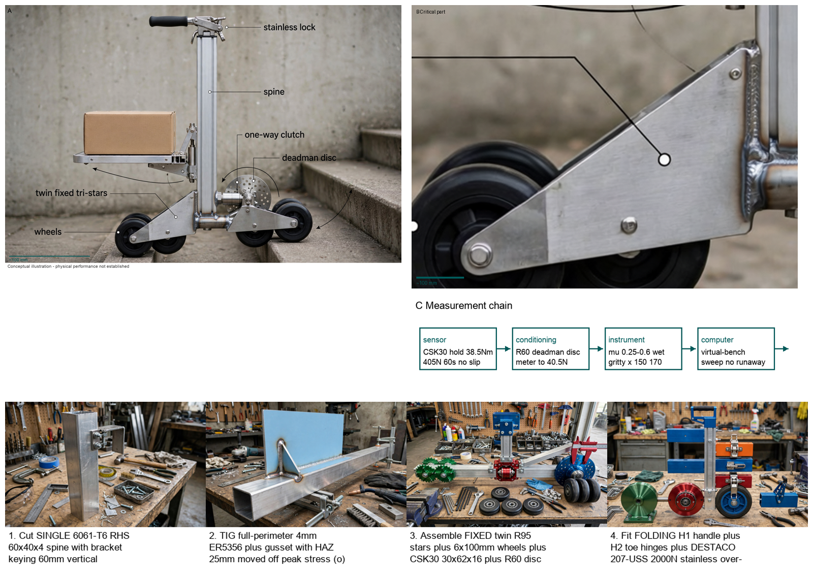

Hardware Scientist — concept report
Stair-climbing hand truck for parcel couriers
Couriers in old city centres carry heavy parcels up residential staircases with no lift. Design a hand truck that lets one courier move a load of about 60 kg up and down stairs safely, and that folds into a delivery van.
- Load about 60 kg
- Operated by one person
The concept

Twin fixed R95 tri-stars with six 100mm wheels maintain two-nosing contact to bridge 170R/280G stairs while the vertical 60x40x4 6061-T6 spine carries the bending moment and the CSK30 clutch plus R60 deadman disc holds 38.5Nm/405N then meters descent to 40.5N, with only H1 handle and H2 toe folding to 850x550x260 standing stow.
Force: H2 toe -> spine -> R95 tri-stars | Measured: CSK30 -> R60 disc
Three decisive design choices
- FIXED twin R95 tri-stars with 6x100mm wheels for two-nosing contact on 170R/280G with 220R out-of-scope
- SINGLE vertical 60x40x4 spine with full-perimeter 4mm ER5356 plus gusset and HAZ 25mm off peak stress
- CSK30 110Nm SF2.86 plus R60 deadman disc to hold 38.5Nm/405N then meter to 40.5N with sealed 2RS
Physical bench still required to prove 60kg plus 12kg 60s hold 38.5Nm/405N no slip and deadman-metered 40.5N descent with no runaway and no over 150N spike across mu and risers, analysis-only not accepted?
What happened
References
- prior-art check — https://patents.google.com/patent/US20090133517A1/en https://patents.google.com/patent/US20090133517A1/en
Files
Run 20261101-154944_stair-climbing-hand-truck-for-parcel-cou · total cost $0.27 · conceptual illustration — physical performance not established.